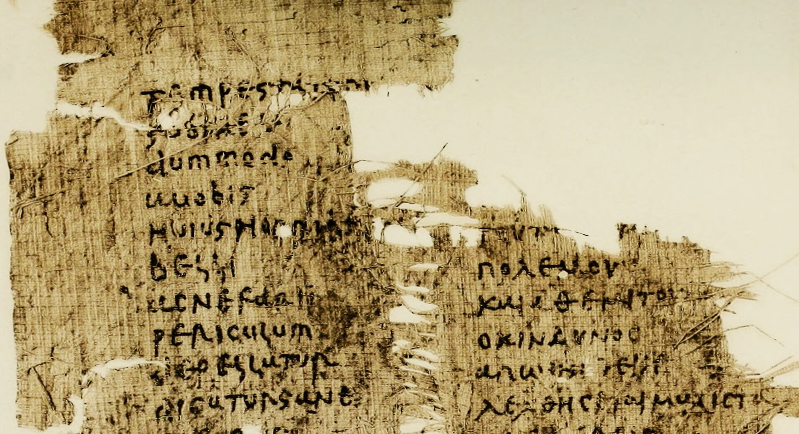

Geography and Demography

The Roman Empire was one of the largest in history, with contiguous territories throughout Europe, North Africa, and the Middle East. The Latin phrase imperium sine fine ("empire without end") expressed the ideology that neither time nor space limited the Empire. In Virgil's Aeneid, limitless empire is said to be granted to the Romans by Jupiter. This claim of universal dominion was renewed when the Empire came under Christian rule in the 4th century. In addition to annexing large regions, the Romans directly altered their geography, for example cutting down entire forests.
Roman expansion was mostly accomplished under the Republic, though parts of northern Europe were conquered in the 1st century, when Roman control in Europe, Africa, and Asia was strengthened. Under Augustus, a "global map of the known world" was displayed for the first time in public at Rome, coinciding with the creation of the most comprehensive political geography that survives from antiquity, the Geography of Strabo. When Augustus died, the account of his achievements (Res Gestae) prominently featured the geographical cataloguing of the Empire. Geography alongside meticulous written records were central concerns of Roman Imperial administration.
The Empire reached its largest expanse under Trajan (r. 98–117), encompassing 5 million km2. The traditional population estimate of 55–60 million inhabitants accounted for between one-sixth and one-fourth of the world's total population and made it the most populous unified political entity in the West until the mid-19th century. Recent demographic studies have argued for a population peak from 70 million to more than 100 million. Each of the three largest cities in the Empire—Rome, Alexandria, and Antioch—was almost twice the size of any European city at the beginning of the 17th century.
Then the empire stretched from Hadrian's Wall in drizzle-soaked northern England to the sun-baked banks of the Euphrates in Syria; from the great Rhine–Danube river system, which snaked across the fertile, flat lands of Europe from the Low Countries to the Black Sea, to the rich plains of the North African coast and the luxuriant gash of the Nile Valley in Egypt. The empire completely circled the Mediterranean ... referred to by its conquerors as mare nostrum—'our sea'.
Trajan's successor Hadrian adopted a policy of maintaining rather than expanding the empire. Borders (fines) were marked, and the frontiers (limites) patrolled. The most heavily fortified borders were the most unstable. Hadrian's Wall, which separated the Roman world from what was perceived as an ever-present barbarian threat, is the primary surviving monument of this effort.
Languages

Latin and Greek were the main languages of the Empire, but the Empire was deliberately multilingual. Andrew Wallace-Hadrill says "The main desire of the Roman government was to make itself understood". At the start of the Empire, knowledge of Greek was useful to pass as educated nobility and knowledge of Latin was useful for a career in the military, government, or law. Bilingual inscriptions indicate the everyday interpenetration of the two languages.
Latin and Greek's mutual linguistic and cultural influence is a complex topic. Latin words incorporated into Greek were very common by the early imperial era, especially for military, administration, and trade and commerce matters. Greek grammar, literature, poetry and philosophy shaped Latin language and culture.
There was never a legal requirement for Latin in the Empire, but it represented a certain status.[80] High standards of Latin, Latinitas, started with the advent of Latin literature. Due to the flexible language policy of the Empire, a natural competition of language emerged that spurred Latinitas, to defend Latin against the stronger cultural influence of Greek. Over time Latin usage was used to project power and a higher social class. Most of the emperors were bilingual but had a preference for Latin in the public sphere for political reasons, a "rule" that first started during the Punic Wars. Different emperors up until Justinian would attempt to require the use of Latin in various sections of the administration but there is no evidence that a linguistic imperialism existed during the early Empire.
After all freeborn inhabitants were universally enfranchised in 212, many Roman citizens would have lacked a knowledge of Latin. The wide use of Koine Greek was what enabled the spread of Christianity and reflects its role as the lingua franca of the Mediterranean during the time of the Empire. Following Diocletian's reforms in the 3rd century CE, there was a decline in the knowledge of Greek in the west. Spoken Latin later fragmented into the incipient romance languages in the 7th century CE following the collapse of the Empire's west.
The dominance of Latin and Greek among the literate elite obscure the continuity of other spoken languages within the Empire. Latin, referred to in its spoken form as Vulgar Latin, gradually replaced Celtic and Italic languages. References to interpreters indicate the continuing use of local languages, particularly in Egypt with Coptic, and in military settings along the Rhine and Danube. Roman jurists also show a concern for local languages such as Punic, Gaulish, and Aramaic in assuring the correct understanding of laws and oaths. In Africa, Libyco-Berber and Punic were used in inscriptions into the 2nd century. In Syria, Palmyrene soldiers used their dialect of Aramaic for inscriptions, an exception to the rule that Latin was the language of the military. The last reference to Gaulish was between 560 and 575. The emergent Gallo-Romance languages would then be shaped by Gaulish. Proto-Basque or Aquitanian evolved with Latin loan words to modern Basque. The Thracian language, as were several now-extinct languages in Anatolia, are attested in Imperial-era inscriptions.